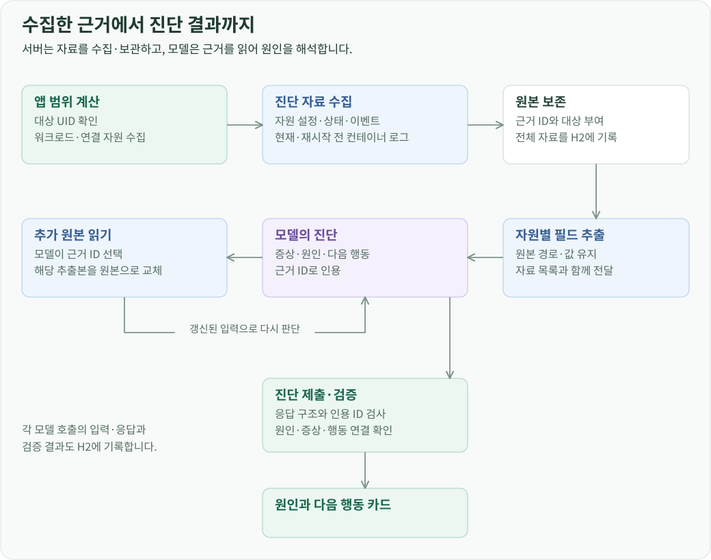
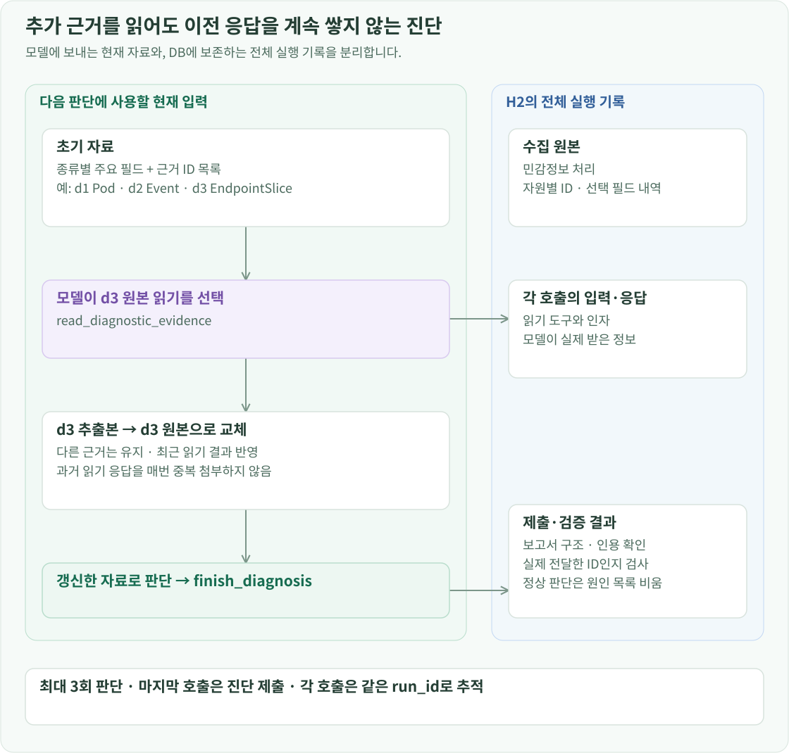
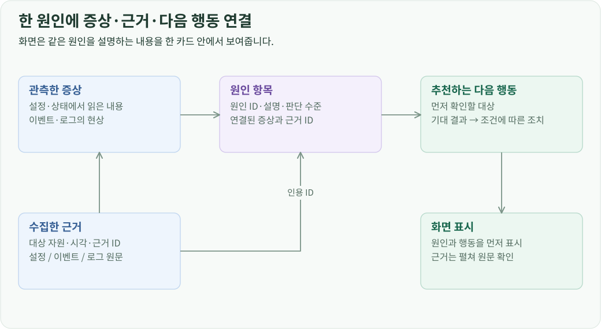

개요
진단은 앱에 속한 자원·이벤트·로그를 수집하고, 모델이 증상과 원인, 다음 행동을 연결하는 과정입니다. 서버는 수집 자료마다 근거 ID를 붙이고, 모델이 반환한 원인과 증상이 어떤 자료를 인용했는지 검사한 뒤 화면에 표시합니다.
앱을 기준으로 진단 자료 수집
진단 대상을 선택하면 앱 구성과 동일한 관계 계산으로 워크로드, 네트워크, 저장소, 실행 노드를 모읍니다. 각 자원의 설정과 상태, 해당 객체와 연결된 이벤트를 진단 자료로 만듭니다. Pod에서는 일반 컨테이너뿐 아니라 init·ephemeral 컨테이너도 확인합니다.
컨테이너마다 현재 로그를 조회하고, 재시작 횟수가 있으면 직전 컨테이너의 로그도 요청합니다. 로그 조회는 최대 3개씩 병렬 실행합니다. 수집한 자원 문서·이벤트·로그에는 d1, d2 같은 ID와 대상 자원 정보를 부여해 하나의 자료 목록으로 묶습니다.

자원 종류에 따라 모델 입력 구성
전체 원본은 실행 기록에 보존하고, 초기 모델 입력에는 자원 종류별로 정한 필드를 넣습니다. 필드 선택은 API 그룹과 Kind를 기준으로 합니다. 같은 Kind 이름을 쓰는 사용자 정의 자원이 기본 자원의 규칙에 섞이지 않도록 API 그룹까지 함께 확인합니다.
워크로드에서는 의도한 설정과 실제 실행 상태를 함께 남깁니다. Deployment·StatefulSet·DaemonSet의 replicas, selector, 배포 전략, Pod template과 준비·가용 상태를 전달하고, Pod에서는 이미지·명령·환경 설정 참조·볼륨·probe·자원 요청을 전달합니다. 여기에 컨테이너의 현재 상태, 직전 종료 상태와 재시작 횟수를 붙여 모델이 설정과 결과를 대조할 수 있게 합니다.
네트워크에서는 Service의 selector·port·targetPort·주소·트래픽 정책을 남기고, EndpointSlice의 실제 주소·대상 참조·준비 조건·포트를 함께 제공합니다. Service 설정만 읽는 데서 끝나지 않고, 어떤 실행 대상이 연결되어 있는지까지 판단할 수 있는 입력입니다.
저장소는 PVC·PV·StorageClass의 용량, 연결 대상, 클래스, 볼륨 소스와 상태를 남깁니다. Node는 배치 제한과 taint, providerID, 상태 조건과 용량을 남깁니다. 이벤트와 로그에는 대상 자원과 발생 시각을 붙여, 이 설정들 아래에서 실제로 어떤 일이 일어났는지 연결합니다.
필드를 추출할 때 원래 경로와 값을 유지합니다. 0, false, 빈 배열도 그대로 전달하므로 replicas가 0인 설정이나 준비되지 않은 endpoint가 입력에 남습니다. 별도 필드 규칙이 없는 자원은 원래 필드를 사용합니다. 제거한 필드 경로와 적용한 추출 규칙의 버전도 실행 기록에 저장합니다.
민감정보 처리 후 만든 문서는 입력 예산 안에서 전달하고, 전체 자료의 ID·종류·이름은 근거 목록에 남깁니다. 모델은 이 목록을 보고 필요한 원본을 선택할 수 있습니다.
추가 자료 읽기와 진단 제출
모델에 제공하는 동작은 두 가지입니다. read_diagnostic_evidence는 수집된 근거 ID를 지정해 원본을 읽고, finish_diagnosis는 진단 결과를 정해진 구조로 제출합니다.

추가 자료를 읽으면 해당 문서의 초기 필드 추출본을 원본으로 교체합니다. 다음 호출에는 갱신된 자료와 최근 읽기 결과를 전달하고, 이전 읽기 응답을 계속 중복해서 쌓지 않습니다. 각 호출의 전체 입력과 응답은 별도로 H2에 남습니다. 판단은 최대 3회로 구성하고 마지막 호출에서는 진단 제출 도구를 제공합니다.
증상·원인·다음 행동의 연결
모델이 증상과 원인, 조치 목록을 각각 작성하면 서로 관련 없는 내용이 한 보고서에 섞일 수 있습니다. 진단 응답은 원인마다 고유 ID를 두고, 그 원인이 설명하는 증상과 근거, 다음 행동을 한 항목 안에 묶도록 설계했습니다.

각 원인에는 판단 수준과 근거 ID가 붙습니다. 다음 행동에는 먼저 확인할 대상, 기대하는 결과, 결과에 따라 취할 조치를 넣습니다. 화면은 이 연결을 유지한 채 원인과 행동을 먼저 보여주고, 사용자가 근거를 펼치면 같은 항목에 인용된 이벤트나 로그를 표시합니다.
서버는 JSON Schema로 응답 구조를 검사하고, 원인 ID의 중복과 인용 ID의 유효성을 확인합니다. 인용은 모델에 실제 전달한 자료의 ID여야 합니다. 정상으로 판단한 보고서는 원인 목록을 비우고 관측 근거를 제출하도록 처리합니다.
정상 보고서에서 관측 근거만 빠졌다면 기존 진단을 보관한 채 complete_diagnostic_observations로 그 필드만 보완합니다. 형식 오류를 수정하면서 이미 작성한 요약이나 판단까지 다시 만들지 않도록 보완 범위를 분리했습니다.

crash-demo에서는 컨테이너의 실행 설정에 있는 exit 7과 종료·재시작 기록을 연결해 반복 재시작의 원인으로 제시했습니다. 화면은 원인과 다음 행동을 먼저 보여주고, 이벤트·로그 근거와 앱 구성은 펼쳐서 확인하도록 배치합니다.
이미지 다운로드 실패, ConfigMap 누락, PVC 바인딩 대기, 스케줄링 실패, readiness 실패와 정상 앱에도 같은 진단 경로를 적용했습니다. 수집 자료를 고정해 모델을 비교한 검증 사례에서는 입력 누락, 모델의 원인 해석, 보고서 검증 오류를 각각 어떻게 구분했는지 확인할 수 있습니다.
비동기 실행과 결과 저장
통합 현황에서 진단을 요청하면 서버가 실행 ID를 발급합니다. 화면은 그 ID로 진행 상태를 조회하고, 완료되면 저장된 진단 결과를 표시합니다. 채팅에서는 같은 진단 과정의 진행 상태와 결과를 SSE로 전달합니다.
실행 기록에는 수집 원본, 필드 선택 내역, 모델에 전달한 자료, 추가 읽기, 모델 응답, 검증 결과가 같은 실행 ID 아래에 저장됩니다. 관리자는 원인 카드의 인용에서 수집 자료를 확인하고, 해당 결론을 생성한 모델 입력까지 이어서 열 수 있습니다.